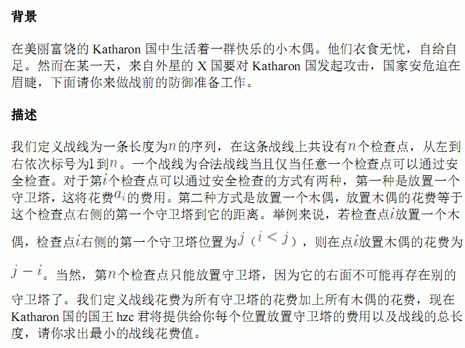
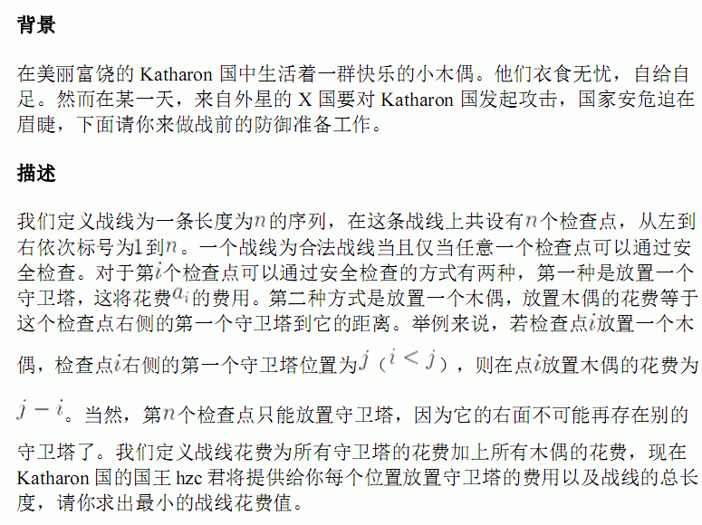

| F.A.Qs | Home | Discuss | ProblemSet | Status | Ranklist | Contest | 入门OJ | ModifyUser Xeonacid | Logout | 捐赠本站 |
|---|
| F.A.Qs | Home | Discuss | ProblemSet | Status | Ranklist | Contest | 入门OJ | ModifyUser Xeonacid | Logout | 捐赠本站 |
|---|

第一行为一个整数N表示战线的总长度。
第二行N个整数，第i个整数表示在位置i放置守卫塔的花费Ai。
共一个整数，表示最小的战线花费值。
1<=N<=10^6,1<=Ai<=10^9